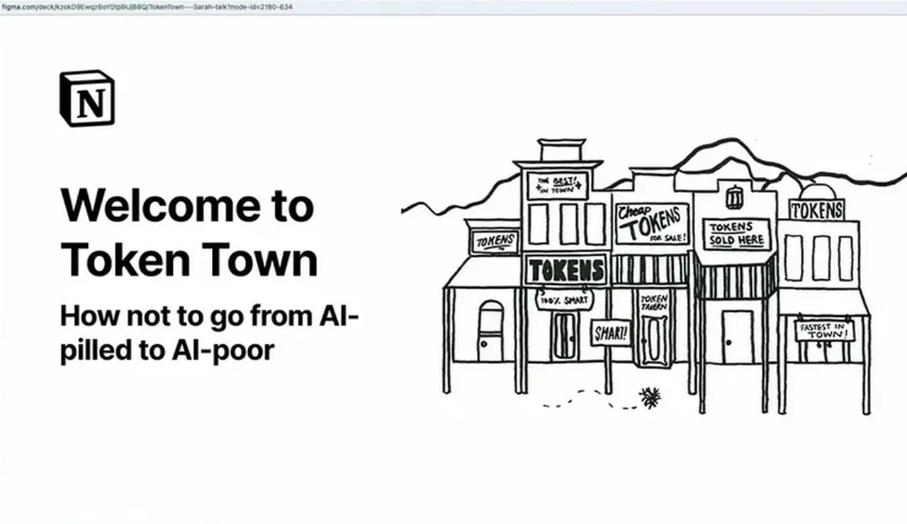
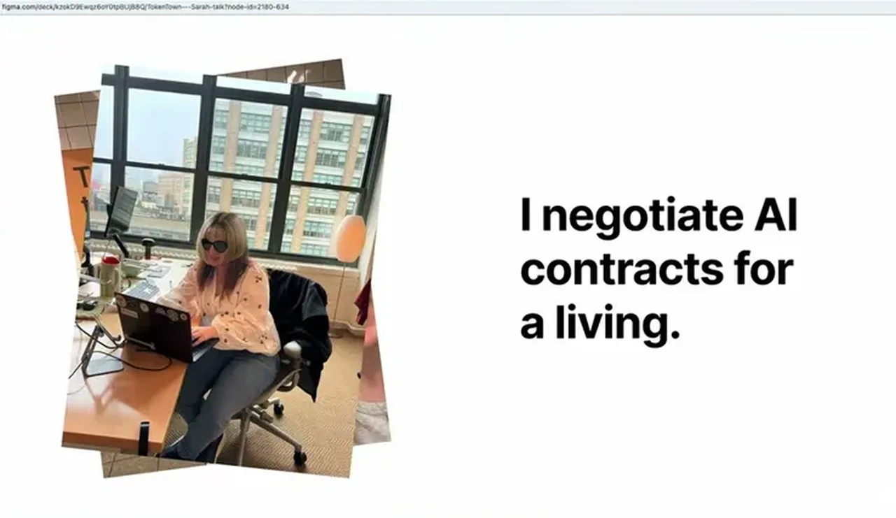
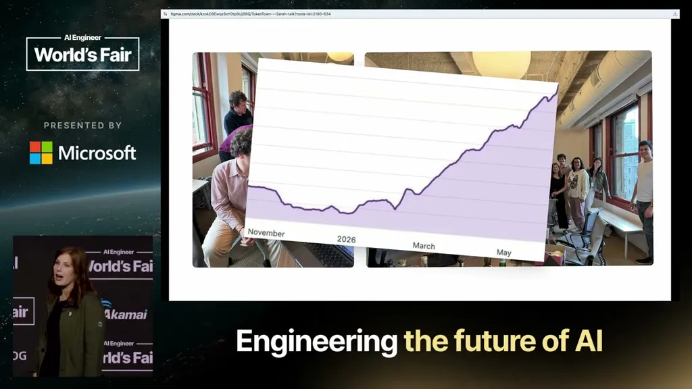
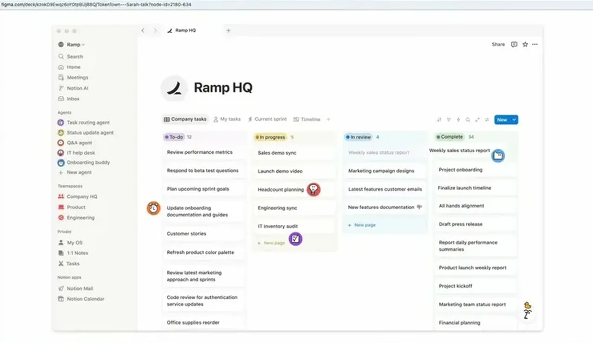
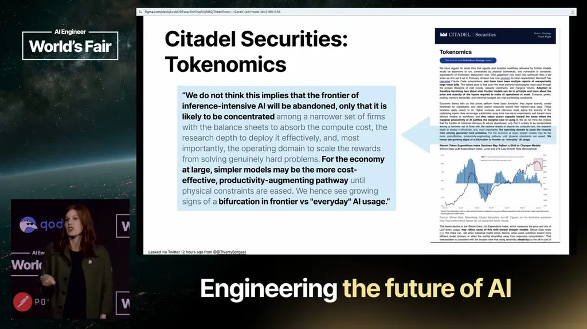
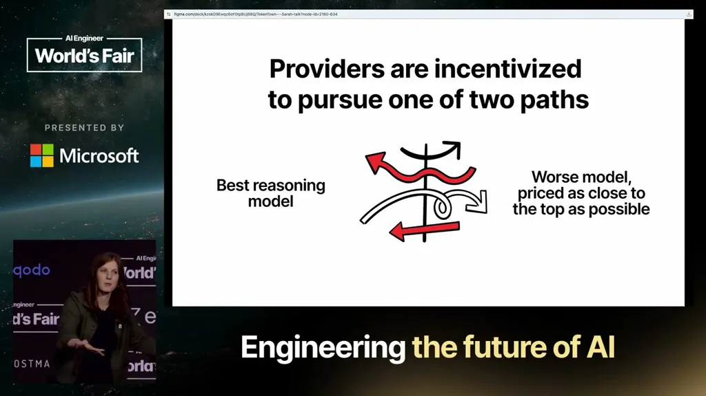
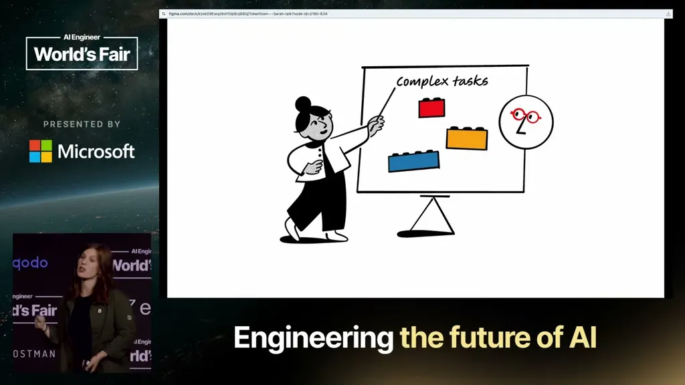
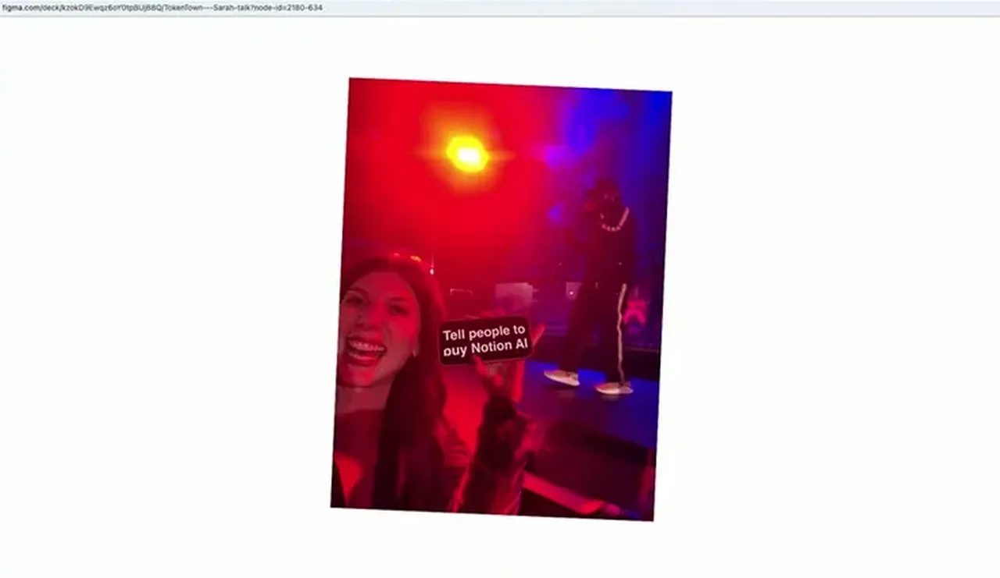
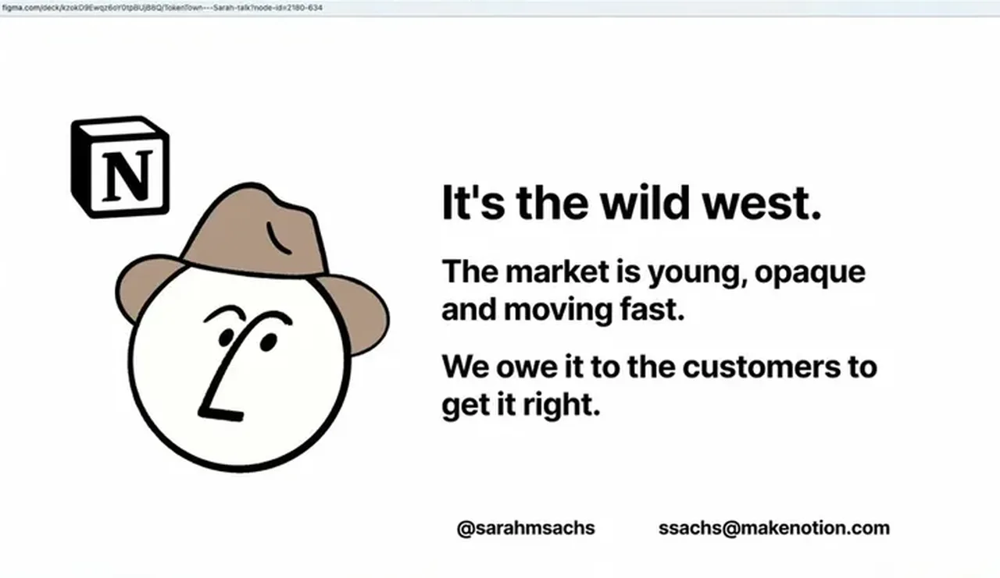

Sachs lays out concrete token-economics traps (locked-in providers, silent price hikes on model upgrades) that determine whether an AI product stays viable as usage scales
This is our schematic of how Sachs frames Notion's routing choice as a hedge against price hikes and lock-in, not a diagram she showed on screen (ours).
“88% of people can't even get past AI as an assistant.”
said at 03:45“your supplier is your competitor. I know very few people who have convinced me that that's not true.”
said at 07:26“if you tie yourself to one provider, you have no exit”
said at 07:26“it has an entire new digit, right? Whatever demarcation system that model family likes, it's brand new. It's 40% more than its predecessor, which is being deprecated in the next four months.”
said at 05:48“It's the same with model pricing, which means that price does not correlate with capability growth”
said at 12:03“we also have an auto model there at the top that handles about 75% of our traffic”
said at 13:05“you don't need an LLM to turn a CSV into a PDF. You don't need an LLM to talk to notion tool calls if we have a CLI. You definitely don't need an LLM to do deterministic SQL queries.”
said at 17:12“openweight models are really strong enough to handle these tasks and the possibility to RL on top of them has also kind of expanded the upmarket growth that they can cover”
said at 15:07“The second you have that system, you're exposing risk. And in fact, the more autonomous your system is, the more unsupervised this risk is.”
said at 18:14








| Stance | Claim | t |
|---|---|---|
| asserts | The vast majority of companies never progress past treating AI as an individual assistant. | 03:45 |
| warns | Buying tokens from a first-party model provider that also competes with you is structurally a bad deal. | 07:26 |
| warns | Committing to one model provider removes your ability to exit a bad deal. | 07:26 |
| asserts | Notion's own auto-model routing handles about 75% of product traffic without committing to a single lab. | 13:05 |
| warns | Any system with private data access, untrusted content exposure, and external communication ability is exposing itself to risk, worse as autonomy increases. | 18:14 |
| recommends | Deterministic tasks like format conversion, tool calls, and SQL queries shouldn't be routed through an LLM at all. | 17:12 |
| asserts | Open-weight models plus post-training RL are now strong enough to expand the range of tasks they can cover, unlike a year ago. | 15:07 |
| asserts | In the current oligopoly, model price does not track capability because a near-frontier model only needs to be slightly cheaper to win volume. | 12:03 |
| warns | Model upgrades can carry hidden cost increases, either through more tokens per call or a flat price hike on a new model generation, without warning. | 05:48 |
Machine-readable copy embedded in this page (script#ontology) and in the corpus ontology.